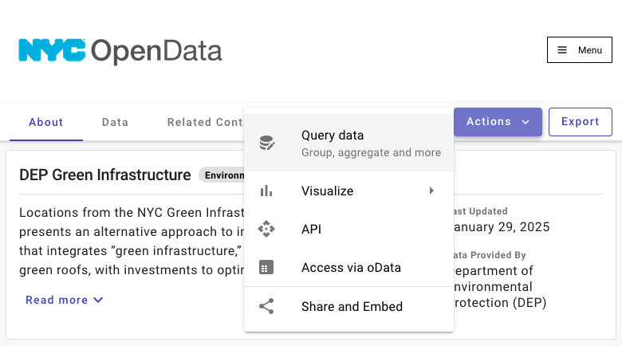
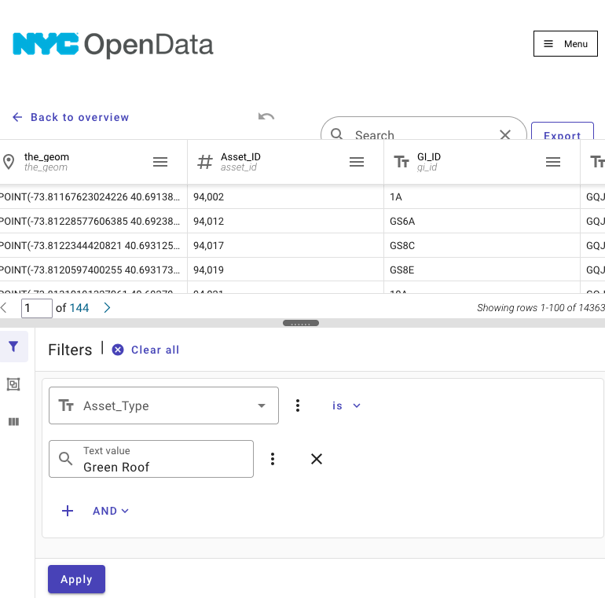

Data
The data for this project came from the NYC Open Data portal.
The dataset used was the DEP Green Infrastructure dataset. It includes many types of green infrastructure beyond green roofs including bioswales, cisterns, and detention systems.
Before downloading, data was filtered to include only green roof data.
Details on the data and data-filtering process
Before downloading any data, I first filtered it to include only what I would need.

Note
By clicking ‘Actions’ you can find options to filter the dataset before downloading. This is very useful, especially if the full dataset is quite large and you are only interested in a subset of the data.
I filtered by setting the “Asset_Type” field to only include the type “Green Roof”
